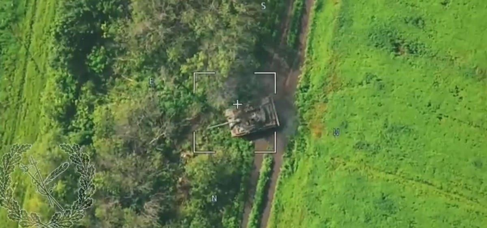

Russia’s Countercounteroffensive Finally Bagged A Ukrainian M-55S TankThe Russians are trying to spoil the Ukrainians’ counteroffensive. A multi-pronged Russian assault along the 40-mile front stretching from just west of Russian-occupied Svatove south to the outskirts of occupied Kreminna, in northeastern Ukraine, has resulted in what the Institute for the Study of War in Washington, D.C. described as “claimed advances” by the Russians. One victim of the Russian countercounteroffensive was a Ukrainian army M-55S tank—likely the first of the ex-Slovenian combat vehicles the Russians have knocked out. A video that circulated online on Saturday depicts an M-55S creeping into a treeline in broad daylight. The crew camouflages the tank with branches, but all for naught—a Russian drone is watching. A Russian artillery shell explodes, setting the M-55S ablaze. The tank seems to be a total write-off. Unless, of course, subsequent videos surprise us with evidence of the vehicle’s survival, as happened the last time the Russians appeared to have destroyed an M-55S. Slovenia donated all 28 of its 36-ton, four-person M-55S tanks—1990s Israeli upgrades of ex-Soviet T-55s from the mid-1950s—last fall after Germany offered some military trucks in exchange. The M-55Ss are thinly-protected—even with their add-on reactive armor—but have reasonably modern British-made 105-millimeter guns and good Israeli fire-controls. These days, the M-55Ss like Ukraine’s German-made Leopard 1A5s are less tanks than they are mobile guns: heavy firepower without heavy protection. The old tanks’ relative vulnerability might explain why they’re on the Svatove-Kreminna front. As far as we know, the M-55Ss all belong to the Ukrainian army’s 47th Mechanized Brigade, but that brigade is in the thick of the fighting in Zaporizhzhia Oblast, a hundred miles to the southwest. It seems the 47th Brigade, which is subordinate to Ukraine’s southern command, chopped its old tanks to the eastern command. That may have made sense eight weeks ago, on the eve of Ukraine’s long-anticipated southern counteroffensive. At the time, northeastern Ukraine was relatively quiet. That changed in July, as the Russians took advantage of the Ukrainians’ dual focus on the south and the area around Bakhmut—and attacked in the northeast. The Russians haven’t gained a lot of ground. But then, neither have the Ukrainians along the main axes of their own offensive. Both armies have dug in along the sectors where they expect to be on the defensive. An attacking force must cross minefields abutted by trenches and bunkers. It’s hard. Ukrainian territorials from the 100th Brigade, supported by a tank—possibly a T-72 from the adjacent 67th Mechanized Brigade—apparently repelled a Russian assault in the forest west of Kreminna last week. It’s not clear exactly where along the 40-mile Kreminna front the M-55Ss are—and whether they held the line even as the first of their number fell prey to Russian gunners. It still is early in Ukraine’s counteroffensive, as well as in Russia’s countercounteroffensive. “In the east, Ukraine has the initiative now in the battle of Bakhmut,” former Australian general Mick Ryan tweeted. “The Russians are however attacking on the Kreminna-Svatove axis.” Overall, Ryan still is betting on Kyiv. “At the operational level, the Ukrainians have the initiative, with combat forces in reserve,” he stated. That reserve no longer includes the 47th Brigade’s M-55Ss, however. The brigade might have hoped the old tanks would avoid major combat for now. But the Russians had other ideas. |
 |